Utilisation du module de Marque-pages pour Freeplane
Sommaire
Définir des raccourcis clavier
Ce module ne définit pas de raccourcis claviers par défaut pour accéder à ses fonctionnalités (car ils pourraient remplacer vos raccourcis claviers existants). Je recommande de créer des raccourcis claviers bien choisis vers les différentes commandes du menu du module. Cela le rendra beaucoup plus pratique à utiliser, puisqu'il a été conçu dans l'idée de faciliter grandement la navigation dans les cartes à l'aide du clavier.
Voici pour exemple les raccourcis que j'utilise :
Commandes principales
- Placer / Supprimer un marque-page : Ctrl-Maj-B ( B comme Bookmark )
- Basculer un marque-page : Ctrl-Maj-T ( T comme Toggle )
- Atteindre un marque-page : Ctrl-Maj-J ( J comme Jump )
Je me suis basé sur les mots anglais pour mes raccourcis, mais j'aurais aussi bien pu utiliser Ctrl-Maj-M,Ctrl-Maj-B et Ctrl-Maj-A pour utiliser les initiales des mots français correspondants.
Autres commandes
- Atteindre le marque-page précédent : Ctrl-Maj-Haut
- Atteindre le marque-page suivant : Ctrl-Maj-Bas
- Liens > Créer un lien dans un marque-page : Ctrl-Maj-I ( "In" - dans le nœud sélectionné )
- Liens > Créer un lien vers un marque-page : Ctrl-Maj-O ( "Out" - hors du nœud sélectionné )
Pour définir un raccourci clavier dans Freeplane, cliquer sur une entrée de menu en maintenant la touche Ctrl enfoncée, puis choisir la combinaison de touches à y associer.
Deux types de marque-pages
Le module permet d'utiliser deux sortes de marque-page:
- Le marque-page standard. Un nœud avec un tel marque-page contient l'icône de marque-page violette. Il n'est pas différent d'un autre nœud de Freeplane qui contient une icône, si ce n'est qu'il est reconnu par le module comme nœud marqué.
 Le marque-page nommé. Un nœud avec un tel marque-page contient l'icône de marque-page verte et a un "nom". Ce nom est une unique lettre, chiffre, ou autre touche du clavier. Il permet un accès rapide à ce nœud. On peut utiliser ce marque-page pour des nœud particulièrement important ou visités de la carte.
Le marque-page nommé. Un nœud avec un tel marque-page contient l'icône de marque-page verte et a un "nom". Ce nom est une unique lettre, chiffre, ou autre touche du clavier. Il permet un accès rapide à ce nœud. On peut utiliser ce marque-page pour des nœud particulièrement important ou visités de la carte.
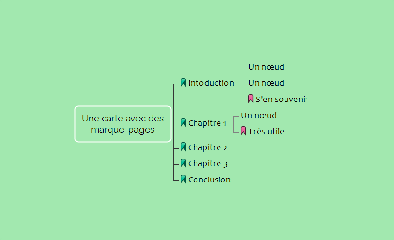
Créer un marque-page
Pour créer un marque-page, utiliser la commande Placer / Supprimer un marque-page
Ceci ouvre une boîte de dialogue qui montre les marque-pages existants, et qui explique les actions possibles :
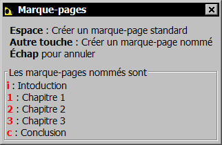
- Enfoncer la touche espace pour créer un marque-page standard
- Ou toute autre touche du clavier pour créer un marque-page nommé
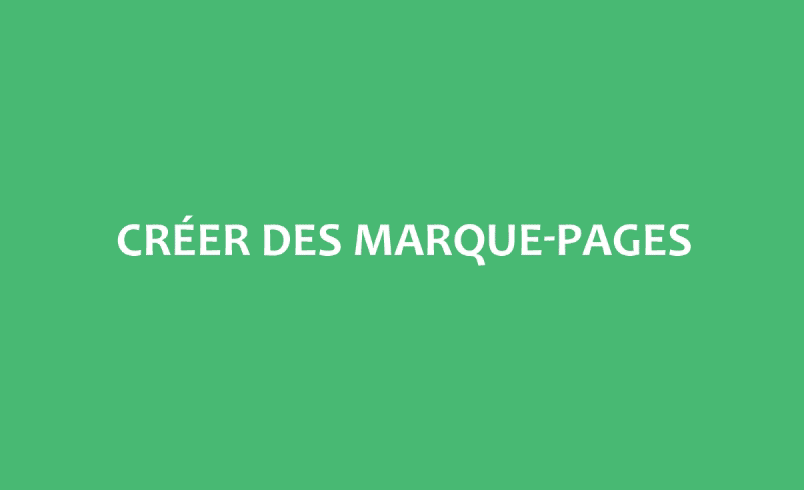
Si vous choisissez un nom qui est déjà utilisé par un autre marque-page nommé, ce marque-page sera effacé.
Voici ce que cela donne pour un marque-page nommé A :
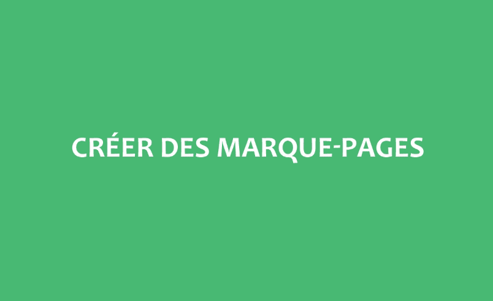
Une autre façon de définir rapidement un marque-page standard est d'utiliser la commande Basculer un marque-page :
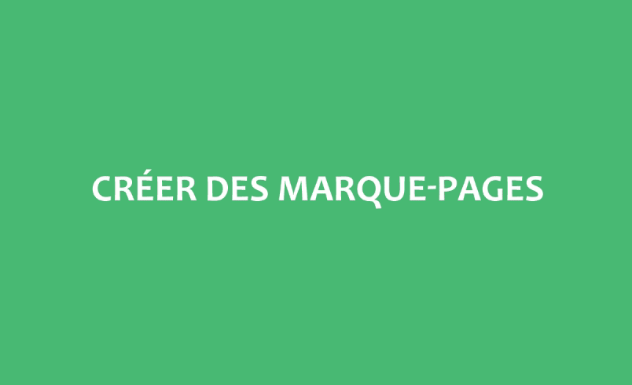
Atteindre un marque-page
Pour aller à un nœud contenant un marque-page, utiliser la commande Atteindre un marque-page.
Ceci ouvre boîte de dialogue qui permet de choisir un marque-page. Vous pouvez choisir le marque-page avec le clavier ou la souris.
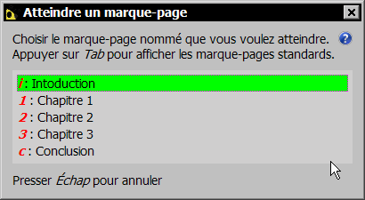
Utiliser la touche Tab pour basculer l'affichage entre les marque-pages standards et les marque-pages nommés.
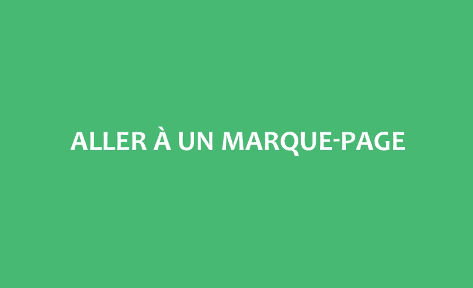
Vous pouvez aussi sauter au marque-page précédent ou suivant avec les commandes Atteindre le marque-page précédent et Atteindre le marque-page suivant :
Effacer un marque-page
Pour supprimer un marque-page, utiliser la commande Placer / Supprimer un marque-page et appuyer sur la touche Effacement arrière :
vous pouvez aussi utiliser la commande Basculer un marque-page :
Créer des liens
Vous pouvez créer facilement un lien vers un nœud contenant un marque-page dans le nœud actuellement sélectionné.
Sélectionnez le nœud où créer le lien, puis utiliser la commande Liens > Créer un lien vers un marque-page. Choisissez alors le nœud marqué qui sera la cible du lien.
Par exemple, pour créer dans un nœud un lien vers le nœud "Chapitre 2" :
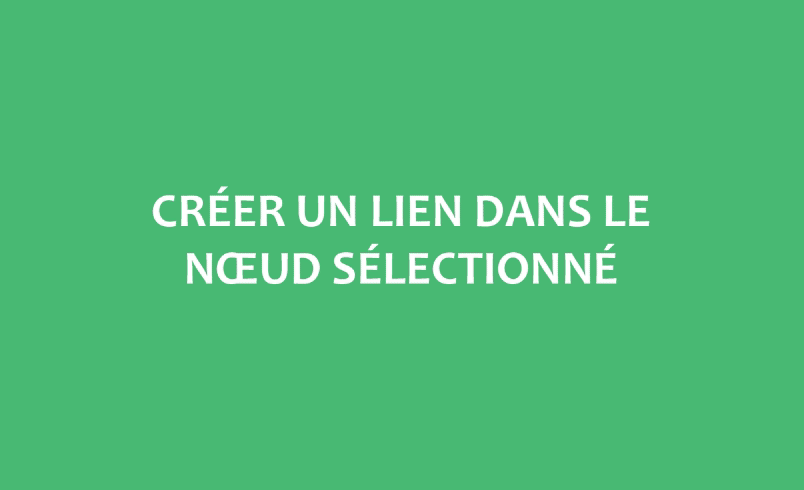
Astuce: vous pouvez également utiliser cette commande pour créer un lien vers le nœud mémorisé par la commande Édition > Lien > Mémoriser le nœud de Freeplane (Ctrl-M pour moi). Pour ceci, presser la touche espace plutôt que choisir un marque-page.
Par exemple, pour créer un lien vers le nœud "Conclusion" :
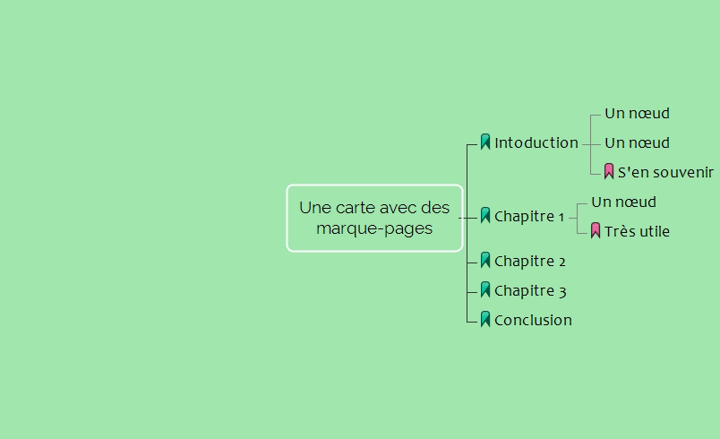
À l'inverse, vous pouvez créer un lien vers le nœud actuellement sélectionné dans un nœud marqué.
Pour cela, utiliser la commande Liens > Créer un lien dans un marque-page, puis choisir le marque-page du nœud où créer le lien.
Par exemple, pour créer un lien vers le nœud sélectionné dans le nœud "Chapitre 2" :
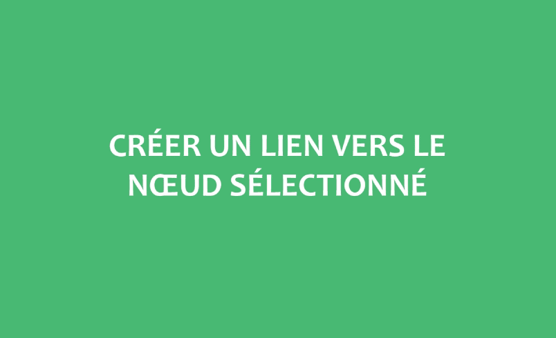
Astuce: vous pouvez également utiliser cette commande pour créer un lien dans le nœud mémorisé par la commande Édition > Lien > Mémoriser le nœud de Freeplane. Pour ceci, presser la touche espace plutôt que choisir un marque-page.
Outils divers
Convertir les marque-pages natifs de Freeplane en marque-pages du module, et vice-versa
Les utilisateurs de Freeplane qui n'utilisent pas ce module peuvent utiliser l'icône en forme d'étoile pour marquer des nœuds particuliers. Ce module n'utilise pas ces icônes comme marqueurs de marque-page. Par contre, il est possible de transformer ces icônes en marque-pages utilisables par ce module avec la commande Outils > Convertir toutes les icônes de marque-page de FreePlane (étoile) en marque-pages pour ce module :
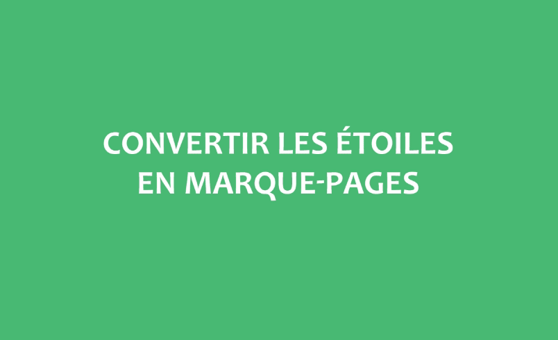
L'opération inverse est également possible avec la commande Outils > Convertir tous les marque-pages en icônes de marque-page de FreePlane (étoile). Ceci peut être utile si vous souhaitez ne plus utiliser ce module mais voulez conserver les marque-pages que vous avez définis. Une fois que vous avez ainsi converti les marque-pages de vos cartes, vous pouvez désinstaller le module car vos nœud sont maintenant marqués avec les icônes en forme d'étoile de Freeplane. Attention, cette opération efface les noms des marque-pages nommés, et n'est pas réversible.
Mettre à jour les marque-pages d'une version précédente du module
Si après une mise-à-jour du module vous avez des comportements inattendus avec vos marque-pages, vous pouvez utiliser la commande Outils > Récupérer les marque-pages nommés d'une version antérieure du module. Ceci devrait résoudre le problème. Mais ne vous alarmez pas trop, cette commande sera utile seulement au petit nombre de personnes qui ont utilisé la version 0.5.0-beta.
Obtenir plus d'aide
N'hésitez pas à poser des questions sur le forum de Freeplane. Il y existe déjà une discussion sur ce module, ajoutez-y votre question.
Vous pouvez également faire part de vos problèmes en ouvrant une issue sur le dépot github du module.